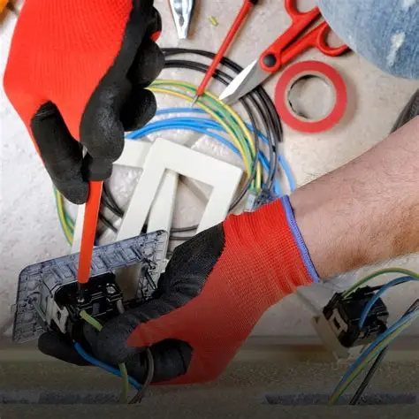

Instalación de Circuitos Eléctricos

Ofrecemos servicios profesionales de instalación de circuitos eléctricos en residencias y edificios comerciales.
Bienvenido a nuestro sitio web de soluciones eléctricas. Ofrecemos una amplia gama de servicios eléctricos para satisfacer sus necesidades.

Ofrecemos servicios profesionales de instalación de circuitos eléctricos en residencias y edificios comerciales.

Realizamos mantenimiento preventivo para garantizar el correcto funcionamiento de sus instalaciones eléctricas.

Si tiene problemas eléctricos, nuestro equipo de expertos puede diagnosticar y reparar cualquier falla eléctrica.